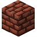

烤炉
烤炉是一种能大量烹饪食物并延长其保质期的绝佳方式。烤炉烘烤的食物腐败速度仅为普通食物的90%。烤炉是一种多方块结构，由烤炉底、烤炉顶以及可选的烤炉烟囱组成。这些方块最初是黏土状态，必须通过将其温度提升到一定程度并保持足够长的时间来硬化。
烤炉配件可以扩展烤炉的功能。


烤炉顶的合成配方。

烤炉底的合成配方。
烤炉底的合成配方。


4

烤炉可以用砖块、其他烤炉方块或任何能为木炭炉保温的方块进行包裹。这意味着你也可以使用石块，如果你愿意的话！


烤炉铲是从烤炉中取出炙热物品的安全方式。手持烤炉铲对烤炉右键即可取出物品。否则你会被烫伤！
烤炉首先由烤炉底和上方的烤炉顶构成。然后，每个烤炉方块除正面外的所有侧面都应覆盖上隔热方块，如前文所述。你可以选择使用烤炉烟囱作为隔热材料。在烤炉正后方堆叠烟囱，可以让炉内的烟雾向上排出。如果不这样做，烟雾会很快充满你的屋子，非常烦人！
多方块结构
烤炉的一个示例，包括未硬化的和硬化的。
烤炉底用来放置燃料，且只能使用原木。按下右键可以添加或取出原木。烤炉底也是烤炉的一部分，可以用起火器或其他工具点燃。它把热量传递到上方的烤炉顶。
烤炉顶用来容纳被烹饪的食物。它会从烤炉底汲取热量，并随时间缓慢释放。这意味着即使你的燃料耗尽，烤炉顶也能继续工作一小段时间。向其中添加物品只需按下右键。记住，之后要用烤炉铲取出物品！
硬化烤炉方块很简单，但需要耐心。只需正常地点燃你的烤炉底，然后等待就可以了。如果一个烤炉方块在超过600度的温度下保持约80秒，它就会硬化自身及其周围的任何烤炉方块。硬化效果会一直向上传导到烟囱。


为你的烤炉顶或烤炉底制作烤箱隔热层，可以让你不再需要用方块进行外部包裹。但这并不能免除烟囱的需求。使用右键来安装它。

台面是装饰性方块，可以算作烤炉隔热层，且外观与烤炉方块相匹配。它们是你厨房装饰的绝佳选择。
烤炉还有装饰面，可用于改变其外观。这些饰面应用于烤炉的基本砖块（或砖块本身），并且是装饰性的。不同的饰面可以混合搭配。按右键就可以应用它们。
8

8
8
8